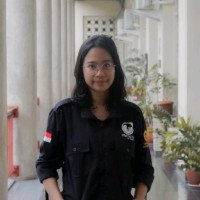

|  |
Dila Rizvina NataishaElectrical Engineering Student and Front-end Developer A final year Electrical Engineering student at Universitas Gadjah Mada who also has a strong interest in graphic design. Participated in various activities inside campus based on my interest and adventurous nature. I believe that my skills and experiences could benefit the company |
| 2018 - Present | Universitas Gadjah Mada - D.I. Yogyakarta |
|---|---|
| Bachelor Degree in Electrical Engineering, 3.17/4.00 | |
| 2017 - 2018 | SMAN 8 Jakarta - DKI Jakarta |
| Science Studies | |
| 2016 - 2017 | SMAN 2 Kota Tangerang Selatan - Banten | Science Studies |
| PT Pertamina (Persero RU VI Balongan - West Java | Jan 2021 - Feb 2021 |
| Maintenance Execution Intern | |
|
|
| Departemen Teknik Elektro dan Teknologi Informasi FT UGM - D.I. Yogyakarta | Oct 2020 - Dec 2020 |
| Laboratory Assistant of Digital and Microprocessor | |
|
| KMTETI FT UGM - D.I. Yogyakarta | Feb 2020 - Dec 2020 |
| Vice Head of Information and Communication Division | |
|
|
| KMTETI FT UGM - D.I. Yogyakarta | Jan 2019 - Feb 2020 |
| Treasurer of Information and Communication Division | |
|
|
| JournARTlism 2019 - D.I. Yogyakarta | Jun 2019 - Oct 2019 |
| Head of Multimedia Team | |
|
|
| to be continued . . . |
Adobe Photoshop, Adobe Illustrator, Corel Draw, Adobe Lightroom
C, C++, CSS, Flux, HTML, Python, Javascript
Arduino, ESP32, Raspberry Pi